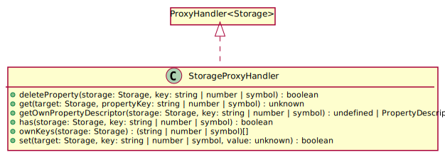

Hierarchy-Diagram
{kind=link}
Legend
 class
class
 public method
public method
Hierarchy
- StorageProxyHandler
Implements
- ProxyHandler<Storage>
Index
Constructors
Methods
Constructors
constructor
-
Returns StorageProxyHandler
Methods
deleteProperty
-
Removes the item stored in
storageunder the providedkey. It enables for thedeleteoperator's use on customStorageimplementations when passed in aProxy.Parameters
-
storage: Storage
-
key: string | number | symbol
Returns boolean
-
get
-
Returns the item stored in
storageunder the providedkey. It enables for the property accessors on customStorageimplementations when passed in aProxy.Parameters
-
target: Storage
-
propertyKey: string | number | symbol
Returns unknown
-
getOwnPropertyDescriptor
-
Returns a synthetic property descriptor for the value stored in
storageunder the providedkey. It enables for property descriptor accessors on customStorageimplementations when passed in aProxy. when passed in aProxy.Parameters
-
storage: Storage
-
key: string | number | symbol
Returns undefined | PropertyDescriptor
-
has
-
Tells whether there's a value stored in
storageunder the providedkey. It enables for presence checks on customStorageimplementations when passed in aProxy, for example:"myKey" in myStorage ? "yay" : "nay"Parameters
-
storage: Storage
-
key: string | number | symbol
Returns boolean
-
ownKeys
-
Returns the keys present in
storage. It enables forPropertyKeyretrievals on customStorageimplementations when passed in aProxy, for example:for (key in myStorage) ...Parameters
-
storage: Storage
Returns (string | number | symbol)[]
-
set
-
Sets the provided
valueinstorageunder the providedkey. It enables for the property setters on customStorageimplementations when passed in aProxy.Parameters
-
target: Storage
-
key: string | number | symbol
-
value: unknown
Returns boolean
-
Summary
Utility object used to implement the Indexable Behavior of
Storageimplementations.Description
It's primarily intended for internal Library use, however it's implemented in a way to allow for use by Library users. If possible, at least submit a ticket when you create custom
Storageimplementations so that maintainers can learn more about developer use cases, and make the library better by extending the Library's feature set.Usage
1.0.0
1.0.0
MDN Proxy Object
MDN Storage Interface